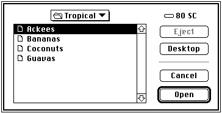

Standard User Interfaces
If your application has no special interface requirements, you can use theStandardGetFileandStandardPutFileprocedures to display the standard dialog boxes for opening and saving documents.Opening Files
You use theStandardGetFileprocedure when you want to let the user select a file to be opened. Figure 3-1 illustrates a sample dialog box displayed byStandardGetFile.The directory whose contents are listed in the display list in the dialog box displayed by
StandardGetFileis known as the current directory. In Figure 3-1, the current directory is named "Tropical." The user can change the current directory in several ways. To ascend the directory hierarchy from the current directory, the user can click the directory pop-up menu and select a new directory from among those in the menu. To ascend one level of the directory hierarchy, the user can click the volume icon. To ascend immediately to the top of the directory hierarchy, the user can click the Desktop button.Figure 3-1 The default Open dialog box

To descend the directory hierarchy, the user can double-click any of the folder names in the list (or select a folder by clicking its name once and then clicking the Open button). Whenever the current directory changes, the list of folders and files is updated to reflect the contents of the new current directory.
The volume on which the current directory is located is the current volume (or current disk), whose name is displayed to the right of the directory pop-up menu. If the current volume is a removable volume, the Eject button is active. The user can click Eject to eject the current volume and insert another, which then becomes the current volume. If the user inserts an uninitialized or otherwise unreadable disk, the Standard File Package calls the Disk Initialization Manager to provide the standard user interface for initializing and naming a disk. See the chapter "Disk Initialization Manager" in this
book for details.Note that the list of files and folders always contains all folders in the current
directory, but it might not contain all files in the current directory. When you callStandardGetFile, you can supply a list of the file types that your application
can open. TheStandardGetFileprocedure then displays only files of the specified types. You can also supply your own file filter function to help determine which files
are displayed. (See "Writing a File Filter Function" on page 3-20 for details.)When the user is opening a document,
StandardGetFileinterprets some keystrokes as selectors in the displayed list. If the user presses A, for example,StandardGetFileselects the first item in the list that starts with the letter a (or, if no items in the list start with the letter a, the item that starts with the letter closest to a). The Standard File Package sets a timer on keystrokes: keystrokes in rapid succession form a string; keystrokes spaced in time are processed separately. See "Keyboard Equivalents" on page 3-7 for a complete list of keyboard equivalents recognized byStandardGetFile.Saving Files
You use theStandardPutFileprocedure when you want to let the user specify a name and location for a file to be saved. Figure 3-2 illustrates a sample dialog box displayed byStandardPutFile.Figure 3-2 The default Save dialog box
The dialog box displayed by
StandardPutFileis similar to that displayed byStandardGetFile, but includes three additional items. The Save dialog box
includes a filename field in which the user can type the name under which to save
the file. This filename field is a TextEdit field that permits all the standard editing operations (cut, copy, paste, and so forth). Above the filename field is a line of text specified by your application.When the user is saving a document,
StandardPutFilecan direct keystrokes to either of two targets: the filename field or the displayed list. When the dialog box first appears, keystrokes are directed to the filename field. If the user presses the Tab key or clicks to select an item in the displayed list, subsequent keystrokes are interpreted as selectors in the displayed list. Each time the user presses the Tab key, keyboard input shifts between the two targets.The third additional item in the Save dialog is the New Folder button. When the user clicks the New Folder button, the Standard File Package presents a subsidiary dialog
box like the one shown in Figure 3-3.Figure 3-3 The New Folder dialog box
If the user asks to save a file under a name that already exists at the specified location, the Standard File Package displays a subsidiary dialog box to verify that the new file should replace the existing file, as illustrated in Figure 3-4.
Figure 3-4 The name conflict dialog box
The
StandardGetFileandStandardPutFileprocedures always display the new dialog boxes. The procedures available before version 7.0 (SFGetFile,SFPutFile,SFPGetFile, andSFPPutFile) also display the new dialog boxes when running in version 7.0, unless your application has customized the dialog box. For more details on how the version 7.0 Standard File Package handles earlier procedures, see "Using the Original Procedures" on page 3-40.Keyboard Equivalents
The Standard File Package recognizes a long list of keyboard equivalents during dialogs.
Keystrokes Action Up Arrow Scroll up (backward) through displayed list Down Arrow Scroll down (forward) through displayed list Command-Up Arrow Display contents of parent directory Command-Down Arrow Display contents of selected directory or volume Command-Left Arrow Display contents of previous volume Command-Right Arrow Display contents of next volume Command-Shift-Up Arrow Display contents of desktop Command-Shift-1 Eject disk in drive 1 Command-Shift-2 Eject disk in drive 2 Tab Move to next keyboard target Return or Enter Invoke the default option for the dialog box
(Open or Save)Escape or Command-. Cancel Command-O Open the selected item Command-D Display contents of desktop Command-N Create a new folder Option-Command-O or Option-[click Open] Select the target of the selected alias item instead
of opening itWhen the user uses a keyboard equivalent to select a button in the dialog box, the
button blinks.